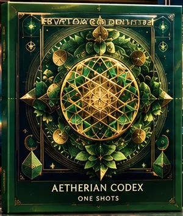

432 Hz tuning
Music tuned to A = 432 Hz instead of the standard 440 Hz. Many listeners find this tuning warmer and more soothing.
A complete overview of Shifting Vibrations: what's inside, how it's built, who it's for and what you get when you order.
Instant digital download · checkout through ClickBank · 60-day money-back guarantee from the seller
Shifting Vibrations is an audio collection from AstralHQ. Its aim is simple: give you a short daily listening ritual that helps you relax, meditate and work on your mindset. The seller presents the tracks as a way to “raise your vibration” and support abundance-focused intentions.
We prefer to describe the program in plain terms: a library of carefully produced music that uses well-known listening techniques. You play it for a few minutes each day. If you're curious about the outcomes, our Benefits page separates customer experiences from seller claims.
Instant digital download · checkout through ClickBank · 60-day money-back guarantee from the seller

Shifting Vibrations has no ingredients in the supplement sense. These are the four sound elements the tracks are built from.
Music tuned to A = 432 Hz instead of the standard 440 Hz. Many listeners find this tuning warmer and more soothing.
Two slightly different tones, one in each ear, produce a perceived “beat.” Studies on binaural beats are mixed but growing.
Quiet affirmations woven beneath the music, as used in tracks like Shaman Beats and Lucid Oddysee.
Rain, storms and drifting pads that make each session immersive and easy to return to.

A 432 Hz track the seller built around golden-ratio tuning and positive-belief work for the subconscious.
Layered 432 Hz audio the seller describes as retraining limiting beliefs with positive-belief layers.
Drum-led soundscape with subliminal messages, positioned for lucid dreaming, astral projection and deep focus.

Subliminal track the seller dedicates to lucid dreaming and more vivid dreams.

Listed for grounding, relaxation and manifestation practice. The included guide suggests starting here.
An ambient journey track made for lucid dreaming and astral projection sessions.
Binaural beats meant to hold a theta-style listening state.
Ambient track with theta binaural beats for astral-projection practice.
Ambient meditation music with soft binaural beats.
A track the seller frames around “higher vibrations.”
| Product name | Shifting Vibrations |
|---|---|
| Creator | AstralHQ (presented by Kai) |
| Format | Digital audio download, nothing physical ships |
| Core content | 6 tracks with 432 Hz tuning, binaural beats and subliminal messages |
| Bonuses | Stormy Escape, Astral Starwaves, Rainy Winter, Royal Awakening |
| Guide | PDF instructions: best times, how to listen, preparation, troubleshooting, tips |
| Suggested use | Once a day for at least 5 minutes |
| Equipment | Any phone, tablet or computer. Headphones recommended for binaural tracks |
| Price | One-time $47, with a $300 list price shown on the seller page |
| Guarantee | 60-day money-back guarantee from the seller |
| Retailer | ClickBank (seller vendor ID: astral43) |
The seller says Shifting Vibrations is for anyone, whatever their background, location or age. In practice, it fits best if you:
If you want guaranteed financial results or medical treatment, this isn't the right product. See our pros and cons.
Next: learn how the daily routine works or read about the focus areas.
Explore government health resources and published research on the listening practices behind Shifting Vibrations: music, binaural beats, meditation, relaxation and sleep habits.
Reviews research on meditation and mindfulness for anxiety, sleep and pain, and notes that much of it is preliminary.
Related topic: Meditation practiceView Official Research ↗NIH Research SummaryNIH · NCCIHSummarises studies on music-based interventions. Results for anxiety, mood and pain look promising, but many studies are small.
Related topic: Music listeningView Official Research ↗US Government Health ResourceNIH · NCCIHCovers breathing, visualization and other methods that aim to trigger the body's relaxation response, and grades the evidence.
Related topic: Relaxation responseView Official Research ↗Peer-Reviewed ResearchNIH · National Library of Medicine (PubMed)A 2019 meta-analysis of 22 human studies (Psychological Research) found a medium overall effect, which varied with exposure time and frequency.
Related topic: Binaural beatsView Official Research ↗NIH Research SummaryNIH · News in HealthExplains present-moment awareness and reviews research on mindfulness for stress, sleep and blood pressure.
Related topic: Mindful listeningView Official Research ↗US Government Health ResourceNIH · NIMHExplains how stress differs from anxiety and lists coping habits like relaxation exercises and regular sleep.
Related topic: Everyday stressView Official Research ↗US Government Health ResourceNIH · MedlinePlusDescribes how long-term stress affects health, suggests relaxation and sleep for managing it, and says when to see a professional.
Related topic: Everyday stressView Official Research ↗US Government Health ResourceCDCCovers recommended sleep by age and habits that support sleep quality, and advises seeing a provider about ongoing sleep problems.
Related topic: Evening wind-downView Official Research ↗US Government Health ResourceNIH · NHLBIRecommends a regular schedule, a calming pre-bed routine and a quiet, dark bedroom.
Related topic: Evening wind-downView Official Research ↗US Government Health ResourceNIH · NIDCDExplains how loud or prolonged sound exposure damages hearing. Keep headphone volume comfortable.
Related topic: Headphone listeningView Official Research ↗These references are provided for educational purposes only. They do not represent an endorsement or approval of this product by any government agency. Research on individual components does not necessarily establish the effectiveness of the finished product.
You get 6 core tracks, 4 bonus soundscapes and a PDF guide as an instant digital download, all for a one-time $47. The seller backs it with a 60-day money-back guarantee.
Instant digital download · checkout through ClickBank · 60-day money-back guarantee from the seller

The complete audio collection: 6 core tracks, 4 bonus soundscapes and a PDF listening guide.
$300$47
One-time payment · instant download · 60-day money-back guarantee
View Offer →